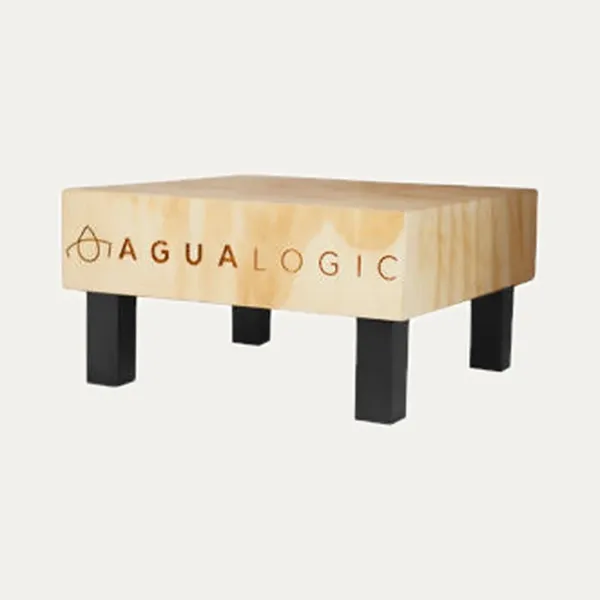
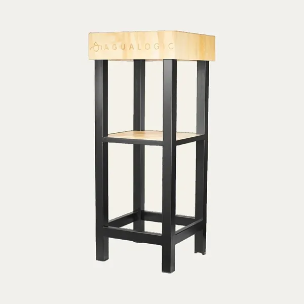
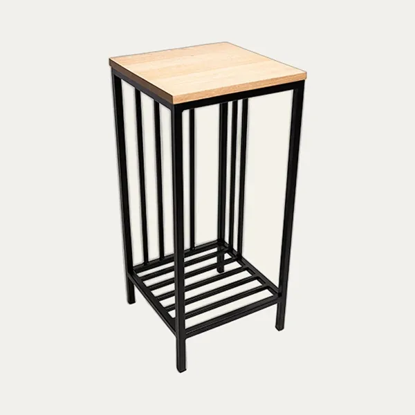
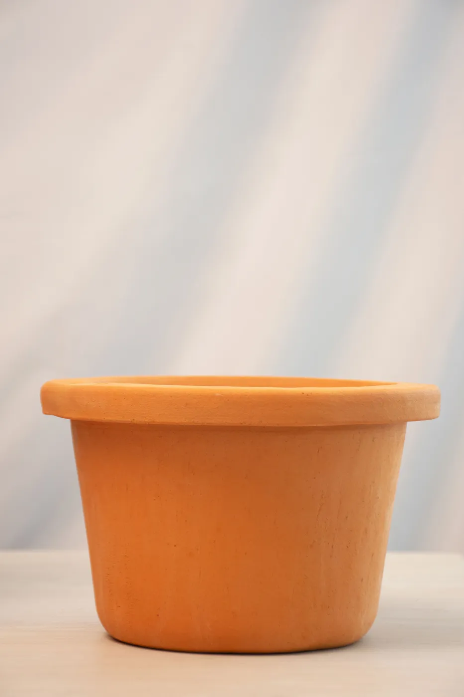
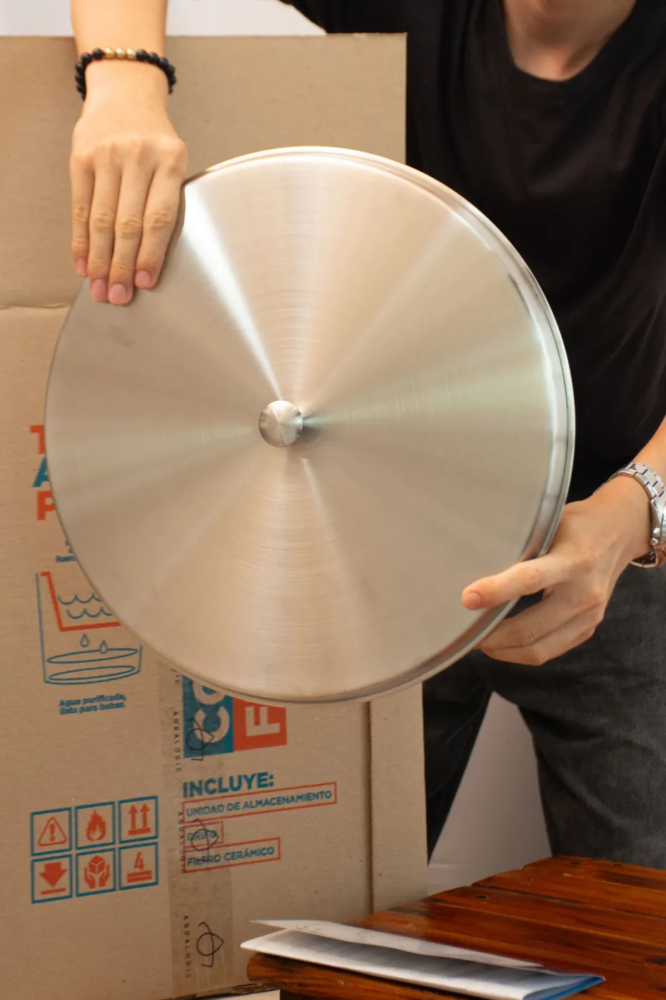
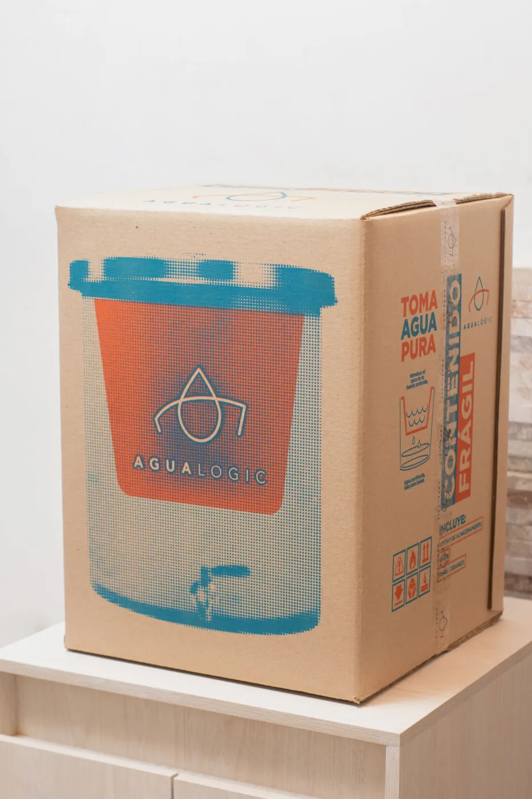
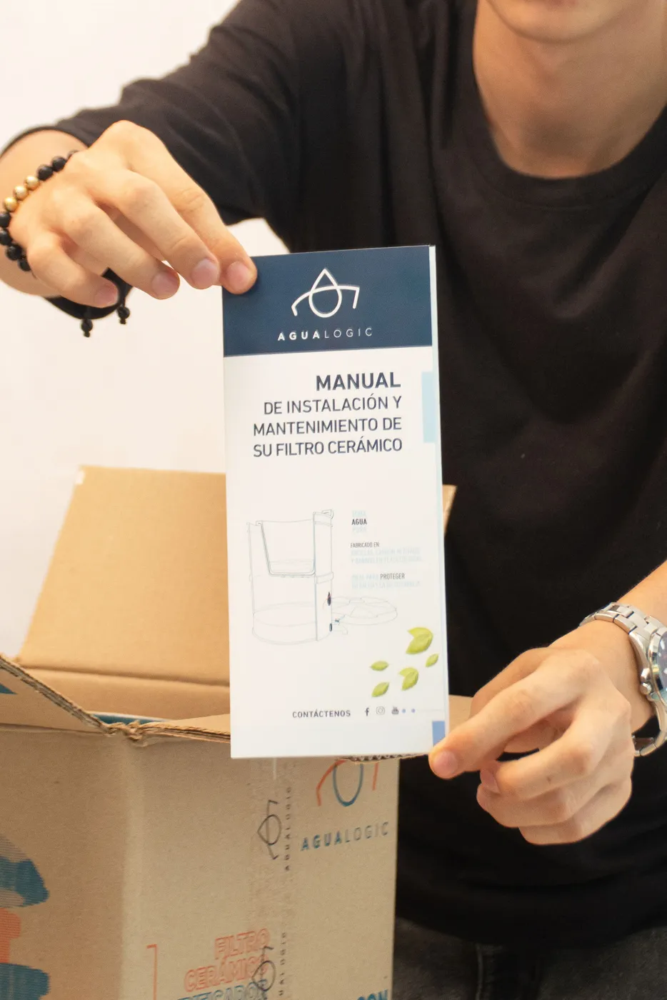

- Un purificador por gravedad no usa luz ni instalación: llenas, el agua gotea por la cerámica y sirves.
- Reemplaza el botellón: 20 litros en el modelo de vidrio y goteo de 1,5 a 2,5 litros por hora.
- Desde $380.000. Envío en Villavicencio y alrededores; pago contraentrega o Nequi.
Abres la llave, sirves un vaso y dudas: ¿esta agua sí está buena para los niños? Mucha gente en Villavicencio termina comprando botellones cada semana, cargándolos por las escaleras y rezando para que el repartidor no se demore.
Hay otra forma. Un purificador de agua por gravedad deja agua pura para el hogar sobre tu mesón, sin enchufe y sin obra. Esta guía te cuenta cómo funciona, cuánto puedes ahorrar y cómo pedir el tuyo.
¿Por qué purificar el agua en casa en Villavicencio?
El agua del grifo llega a tu casa por redes y tanques que no controlas del todo. Después de lluvias fuertes o de un corte, puede traer sedimentos, turbiedad, olor o sabor a cloro. Y el botellón tampoco es una garantía: no sabes cuánto tiempo estuvo almacenado ni cómo se lavó.
El problema del botellón
- Gasto fijo que se repite cada semana, sin fin.
- Esfuerzo: cargar 20 litros, guardarlos, devolver el envase.
- Dependencia: si el proveedor falla, te quedas sin agua para beber.
Lo que buscas en realidad
Agua que sepa bien, que puedas dar a tu familia sin pensarlo dos veces y que no te cueste un dineral cada mes. Para eso sirve un purificador de cerámica.

¿Cómo funciona un purificador de agua por gravedad?
Es más simple de lo que parece. El purificador AguaLogic tiene dos partes: una vasija de cerámica arriba y un depósito de vidrio (o peltre, o acero) abajo.
- Llenas la vasija de barro con agua del acueducto, pozo, aljibe o lluvia.
- El agua gotea por los poros de la cerámica; la gravedad hace el trabajo.
- Cae al depósito de abajo y la sirves por el grifo de acero inoxidable.
 1 · Llenas
1 · Llenas 2 · Gotea
2 · Gotea 3 · Sirves
3 · Sirves¿Qué retiene el purificador?
Según AguaLogic, la cerámica retiene sedimentos, turbiedad, cloro y microplásticos de más de 0,6 micras, además de bacterias como la E. coli. Conserva los minerales del agua.
¿Sirve para el agua de mi barrio?
AguaLogic lo diseña para agua de acueducto, pozo, aljibe y lluvia. Si el agua viene muy turbia, déjala reposar antes de cargarlo.
¿Purificador o filtros de agua en Villavicencio? La diferencia
Mucha gente busca filtros de agua en Villavicencio y encuentra desde mallas de llave hasta equipos con motor. Estas son las diferencias que importan:
| Criterio | Botellón | Purificador por gravedad |
|---|---|---|
| Electricidad | No aplica | No necesita |
| Instalación | No aplica | Ninguna, lo pones en el mesón |
| Gasto recurrente | Cada semana | Mantenimiento y repuesto cada 2 años |
| Cargar peso | Sí, 20 L | No |
Ahorro en botellones: calcula el tuyo
El agua en botellón cuesta muy distinto según dónde la compres en Villavicencio. Mueve los controles y mira en cuánto tiempo se paga tu purificador.
Calculadora de ahorro
¿Quieres la comparación completa? Lee Purificador vs botellón: cuál conviene.
Precios de referencia en la ciudad
| Cómo compras el agua | Precio por botellón | Gasto al mes (2 por semana) |
|---|---|---|
| Recarga en planta local | $2.500 a $7.000 | $22.000 a $61.000 |
| Marca comercial en supermercado | $14.350 a $19.900 | $124.000 a $173.000 |
| Domicilio con envase | cerca de $17.500 | cerca de $152.000 |
Son precios aproximados y pueden variar. Si recargas barato, el ahorro en plata es menor; ahí pesa más saber cómo se purifica tu agua, no cargar peso y no depender de un repartidor. La vasija dura 2 años según AguaLogic: pregúntanos el valor del repuesto. ¿Quieres que hagamos la cuenta contigo? Escríbenos por WhatsApp.
¿Cuánto cuesta un purificador de agua en Villavicencio?
Estos son los precios actuales del catálogo de Pureza Natural, distribuidor autorizado de AguaLogic:
| Modelo | Para quién | Precio |
|---|---|---|
| Mini peltre negro micromate | Una persona, mesón pequeño | $380.000 |
| Peltre (blanco, turquesa, jaspeado) | Hogar, uso diario | $540.000 |
| Vidrio verde o ámbar, 20 L | Familia, a la vista en la cocina | $810.000 |
| Vidrio mate | Edición especial esmerilada | $860.000 |
| Vidrio luna azul cobalto | Edición limitada, pieza única | $1.250.000 |
Qué mirar antes de comprar
Antes de pagar, revisa estos seis puntos. Los números del plano corresponden a cada uno.
- El tamaño. El mini sirve para una persona; el de 20 litros alcanza para una familia.
- El lugar. Necesitas una superficie firme: el de vidrio pesa unos 14 kg y mide 45 cm de alto. Si no tienes mesón, nosotros tenemos bases y mesas.
- Lo que incluye. Unidad de almacenamiento, tapa y grifo de acero inoxidable, y la vasija cerámica.
- El repuesto. La vasija dura 2 años según AguaLogic. Pregunta cuánto cuesta cambiarla.
- Quién te lo vende. Compra a un distribuidor autorizado de AguaLogic.
- La garantía. Pregunta cómo se gestiona. En Pureza Natural la tramitamos nosotros con AguaLogic.
¿No tienes mesón? Tenemos soportes
Si tu cocina no tiene dónde apoyarlo, puedes pedir el purificador con una base o una mesa hecha para él. Precios del catálogo:

Base metal y maderaPara apoyar sobre cualquier superficie$203.000
Mesa metal y maderaMesa alta con repisa inferior para vasos$302.000
Mesa Palomino77 cm, tapa de madera y repisa inferior$330.000

Instalación, curación y mantenimiento
Sin instalación y sin luz
Lo desempacas, lo pones sobre un mesón firme y listo. El modelo de vidrio mide 45 cm de alto por 34,5 cm de diámetro y pesa unos 14 kg, así que elige bien dónde lo dejas.
La curación inicial
La vasija de barro pide 5 cargas de curación: el sabor a arcilla desaparece desde la quinta. Esa agua no se pierde; sirve para regar tus matas. Mira la curación paso a paso.
Mantenimiento cada 2 meses
- Limpia la vasija con cepillo suave y sin jabón.
- Si el goteo se vuelve muy lento, es señal de sedimentos o de fin de vida útil.
- No dejes la vasija seca por días: el sabor a arcilla puede volver.


¿Dónde comprar un purificador AguaLogic en Villavicencio?
En Pureza Natural somos distribuidor autorizado en Villavicencio y el Meta. Tienes tres formas de recibirlo:
- Envío en Villavicencio y alrededores.
- Recogida en Ferrecubiertas, Calle 35 A No. 27-86, barrio San Isidro (lunes a viernes, 8:00 a. m. a 4:00 p. m.).
- Pago contraentrega o por Nequi.
¿Llegamos a tu barrio?
Atendemos Villavicencio y alrededores. Si vives en barrios como Barzal, Porfía o Amarilo, o en municipios cercanos como Restrepo o Cumaral, escríbenos tu barrio y te confirmamos el envío y el costo.
Si algo falla, nosotros gestionamos la garantía con AguaLogic por ti. No tienes que buscar a nadie.
Elige el tuyo y deja los botellones
Mira los modelos con fotos y precios, o cuéntanos cuántas personas son en casa y te recomendamos el tamaño.
Preguntas frecuentes
¿Cuánto cuesta un purificador de agua en Villavicencio?
En Pureza Natural los purificadores AguaLogic van desde $380.000 (mini para una persona) y $540.000 (peltre) hasta $810.000 (vidrio verde de 20 litros). No necesitan electricidad ni instalación. Los precios vigentes están en el catálogo.
¿Necesito instalación o electricidad para usar un purificador por gravedad?
No. Funciona por gravedad: llenas la parte superior y el agua gotea por los poros de la cerámica hasta el depósito inferior. Solo necesitas un mesón firme, agua y hacer la curación inicial de la vasija de barro.
¿Cada cuánto se limpia y cuánto dura la vasija de cerámica?
Según AguaLogic, el mantenimiento es cada 2 meses con cepillo suave y sin jabón, y la vida útil de la vasija es de 2 años. Después se cambia por un repuesto.